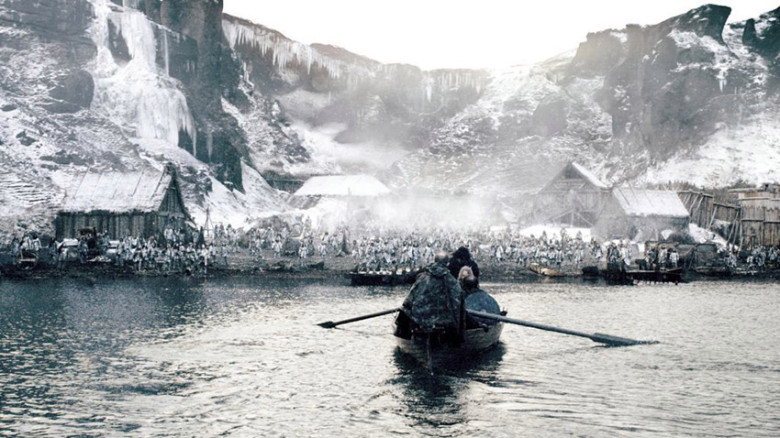
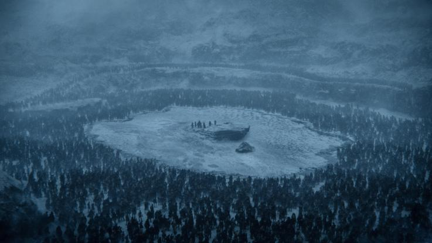

7
MODULE 7 · APPLIED GAME THEORY · RRPF
STRATEGIC
MOVES
Credibility, commitment, and strategic moves
J. RYAN LAMARE
MODULE 7
Learning objectives
1
Change a game you would otherwise lose by making a strategic move: a commitment, a threat, or a promise
2
Play chicken with a steering wheel you can throw out of the window, and find out what the room does when both drivers can
3
Judge when a strategic move is credible, and what it costs to make it so
4
Spot where commitment helps in business, and where it turns into brinkmanship
MODULE 7
Introduction
- One of the most easily challengeable assumptions in strategic thinking is that we are rational
- We now consider the value of commitment, credibility, and other strategic instruments or strategic moves that are geared toward overcoming irrationality
- We’ll then consider another major challengeable assumption in strategic thinking, which is that we always have perfect information
MODULE 7
Strategic moves
- Recall sequential strategies
- Smoking – my preferential outcome would be to smoke now, then quit
- But Future Ryan is an addict and his preferential outcome is to keep smoking
- Therefore, we concluded that I should never smoke in the first place
- But what we were really saying was, I lack the willpower to overcome temptation
- Instead of being stuck with irrationality, we can manipulate a game to our advantage
MODULE 7
Strategic moves
- We cover three types of strategic moves: commitments, threats, and promises
- We will also consider credibility – one must make strategic commitments, threats, and promises credible or else they will not be believed
- While much of game theory is science, credibility lends itself more to art
- And, there can be very dramatic consequences if some strategic moves are actually played out to their limits
Commitment
“I will do X, whatever you do”
Threat
“Unless you do what I want, I will hurt you”
Promise
“If you do what I want, I will help you”
MODULE 7
Strategic moves
- A necessary condition of strategic moves is that they are both observable and irreversible (or give the appearance of irreversibility)
- These conditions ensure that the entity is a true “first mover” – otherwise, if there is any doubt about either of these conditions, the respondent can become the first mover
- There are two broad types of strategic moves
- Unconditional (commitment strategies)
- Conditional (threats, promises – efforts to induce compellence or deterrence)
Observable
The other side has to see the move
Irreversible
And believe it cannot be undone
UnconditionalCommitment
ConditionalThreats and promises
MODULE 7
Unconditional strategic moves: commitment
- Player A declares at the outset of a game, “In the game to follow, I will make a particular move, X”
- The declaration says that Player A’s move is unconditional – A will do X irrespective of whatever B does
- What are the effects of such a declaration?
- In sequential move games, it changes the order of the interaction, so that A has now moved first
- In simultaneous move games, it limits options and changes Player B’s beliefs about the consequences of his/her actions
- We’ve seen this before, but have not explicitly modeled the effects of commitment strategies
IN THE GAME TO FOLLOW, I WILL MAKE A PARTICULAR MOVE, X
PLAYER A
MODULE 7 · ADDED VALUE
Changing the rules of the game again
- Recall the added value card game from our first session – one white card for every yellow card, and $100 for a pair
- Let’s play it again under its original rules
- Say there’s a new stipulation – I’ll let the first one of you who raises their hand leave the room and I’ll guarantee that person the best deal given to any of the other people in the room
- Does the rest of the room accept this deal or not? Think about your own self interest!
MODULE 7 · ADDED VALUE
Make me one last offer

offer your share of the $100
0RESPONSES
ONE PERSON LEAVES
The offers · equal cards
The offers · after I lose three
The offers · one person leaves
DEMO DATA
MODULE 7 · ADDED VALUE
Why I became a fierce negotiator
- That deal looked tempting – except it turned me into a fierce negotiator with everyone
MODULE 7 · CHICKEN
Strategic moves and chicken
- How does Ren induce Chuck to swerve in Footloose?
- Was this the most effective commitment strategy Ren could have followed?
- Recall the two conditions of a commitment strategy
- What other commitment strategies might Ren have used instead?
- Throw the steering wheel out or tie the wheel in place
- Develop a reputation over the course of several games for never swerving
MODULE 7 · CHICKEN
Chicken revisited
CHUCK (SOME OTHER GUY)
REN (KEVIN BACON)
Swerve
Straight
Swerve
Straight
0,0
-10,+10
+10,-10
-100,-100
THROWS HIS STEERING WHEEL
OUT THE WINDOW
OUT THE WINDOW
MODULE 7 · CHICKEN
Let’s play chicken
- Pair up. You are two drivers heading straight at each other, and you play six rounds
- Each round, at the same time: swerve, or go straight. The payoffs are the ones on the right
- Whoever is ahead in the pair after six rounds takes five points. A dead heat pays nobody

0PAIRS
IN
IN
THE OTHER DRIVER
YOU
Swerve
Straight
Swerve
Straight
0,0
−10,+10
+10,−10
−100,−100
MODULE 7 · CHICKEN
Who swerved?
0PAIRS
IN
IN
0ROUNDS
PLAYED
PLAYED
DEMO DATA
1–3
Rounds one to three. Two drivers, one road
Drivers swerved
–%
of the time
Crashes
–%
of rounds ended with both going straight
Both swerved
–%
of rounds
4–6
Rounds four to six. The steering wheel could go out of the window
Threw the wheel out
–%
of drivers, each round
Facing a thrown wheel, swerved
–%
of the time the commitment worked
Both threw the wheel
–%
of rounds – every one of them a crash
MODULE 7
Commitment and sleep
- The resolute Night Self versus the weak-willed Morning Self
- The Morning Self has second-mover advantage
- We can express the Night Self’s choice to set an alarm or not set an alarm at night against the Morning Self’s options to stay in bed or get up
MORNING SELF
NIGHT SELF
Stay In Bed
Get Up
No Alarm
Set Alarm
0,10
10,0
-2,-5
8,-1
MODULE 7
Commitment and sleep
- How can the Night Self change the game to get FMA?
- We’ve expressed the payoffs here as if the choices are simultaneous, in which case the Night Self should never set an alarm – but in reality, this is a sequential game
- In the sequential game, the Night Self can deliberately limit its options so that it sets an alarm, therefore forcing the Morning Self to choose to Get Up
MORNING SELF
NIGHT SELF
Stay In Bed
Get Up
No Alarm
Set Alarm
0,10
10,0
-2,-5
8,-1
HEY GOOGLE, SET AN ALARM FOR 7AM
MODULE 7
Conditional strategic moves: threats and promises
- Conditional strategic moves require you to fix a response rule or reaction function
- “If this, then that…”
- By declaring a conditional move, Player A necessarily assumes the role of second-mover and thereby cedes the first move to the other side
- Two conditional moves on which we focus: threats and promises
- Your parents have probably played conditional strategic games with you!
Threat
“Unless you do what I want, I will respond in a way that will hurt you”
Promise
“If you do what I want, I will respond in a way that will help you”
MODULE 7
Deterrence, compellence, threats, and promises
GOAL: COMPELLENCE
GOAL: DETERRENCE
THREAT
Hostage takersEtc
Mutually assured destructionEtc
PROMISE
Prosecutors offering dealsEtc
Mob bosses offering dealsEtc
THREATS – PROBLEM: CONSEQUENCES!
PROMISES – PROBLEM: COMPLIANCE!
MODULE 7 · IN BUSINESS
Conditional moves and the prisoner’s dilemma
- Let’s return to the example of J. Crew and Banana Republic in their effort to price a totally normal blue shirt
- Recall that we have a PD situation – both BR and J. Crew are incentivized to cut their prices even though doing so is not optimal for either company
- One solution is to introduce a “match or beat the competition” clause
- Many argue that these clauses actually hurt customers because they are an implicit conditional move communicated by one company to another
- “If you lower your prices, I’ll match whatever price you set”
- And therefore, prices remain high and the incentive to defect is removed
J. CREW
BANANA REPUBLIC
$80
$70
$80
$70
$72k,$72k
$24k,$110k
$110k,$24k
$70k,$70k
IF YOU LOWER YOUR PRICES, I’LL MATCH WHATEVER PRICE YOU SET
MODULE 7
Credibility
- Strategic moves are only as valuable as they are credible
- Commitment devices don’t work unless the other side actually believes them to be authentic
- Think about strategic moves and sleep – my Night Self can set the alarm, which will force my Morning Self to wake up
- Except…
MORNING SELF
NIGHT SELF
Stay In Bed
Get Up
No Alarm
Set Alarm
0,10
10,0
-2,-5
8,-1
HEY GOOGLE, SET AN ALARM FOR 7AM
HEY GOOGLE, SET AN ALARM LIKE 9:35AM OR WHATE….
MODULE 7
Introducing Clocky
- Clocky – the alarm that rolls off the nightstand and makes the Morning Self chase it
MODULE 7
Credibility and reputation
- Much more useful in repeated games than in single-play situations
- Can be strategically advantageous to develop a certain reputation
- But you can also get a reputation for not being credible!
- Contracts are designed to ensure credibility, but reputation can work both ways
MODULE 7
George Bush, not a game theorist
George Bush accepts the nomination, 1988
Bill Clinton’s campaign ad, 1992
MODULE 7 · CHICKEN
Is commitment always a good thing?
- Sometimes commitment strategies can be very beneficial – limiting options ensures that you will follow through with whatever position you’ve attached yourself to
- But sometimes commitment can be detrimental
- In the game of chicken – what if both Ren and Chuck threw the wheels out of the car simultaneously?
- Escalation of commitment can easily lead to brinkmanship
CHUCK
REN
Swerve
Straight
Swerve
Straight
0,0
-10,+10
+10,-10
-100,-100
BOTH WHEELS OUT
OF THE WINDOW
OF THE WINDOW
MODULE 7
Commitment and brinkmanship
- If neither side is able to back down, we run into the problem of escalation of commitment
- Parties may remain committed to their positions even though it’s no longer in their self-interest to do so
- “Throwing good money after bad”
- Robert Campeau versus Macy’s for the purchase of Bloomingdale’s
- It often pays to give the other side an escape route in order to avoid escalation of commitment
MODULE 7 · BRINKMANSHIP
Let’s have an auction
- I am auctioning a £20 note
- Bids go up in whole pounds, and anyone can bid at any time
- The highest bidder pays their bid and takes the £20
- The second-highest bidder also pays their bid – and gets nothing
20202020
£20
MODULE 7
Credibility and irreversibility
Forcing yourself into a strategic move that you cannot undo is an extreme form of credibility
SCUTTLE THE SHIPS
Cortes scuttles his ships
ONLY INSTANT CAMERAS
Polaroid’s refusal to invest in anything other than instant cameras
THE DOOMSDAY DEVICE
Dr. Strangelove, and a deterrent that cannot be switched off
Of course, the consequences of all of these actions are, deliberately, severe
MODULE 7
White walkers, game theorists?


“When you surround an army, leave an outlet free. Do not press a desperate foe too hard” – Sun Tzu, The Art of War
MODULE 7 · GAME THEORY IN YOUR WORLD
Back to Granito Air
- Several traders want Granito’s five engines, and you are one of them
- Everything you say to Granito is a strategic move: a commitment, a threat, or a promise. Which of yours would they actually believe?
- Send yours from your phones: what could you commit to, and what would it cost you to make it credible?
0RESPONSES
DEMO DATA
MODULE 7 · TOP OF THE CLASS
Top of the class
ChickenTotal
DEMO DATA
12
3
4
5
Five points to whoever finished ahead in their pair at chicken. Top five only – check your own score any time at ryanlamare.com/go/points.